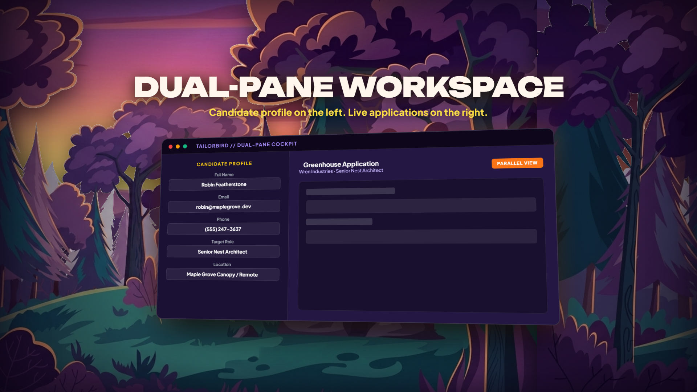
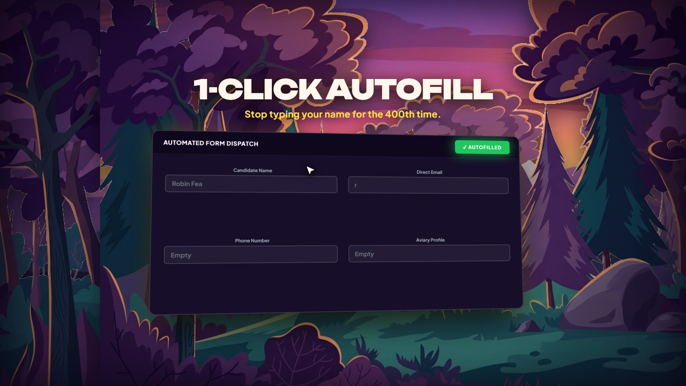
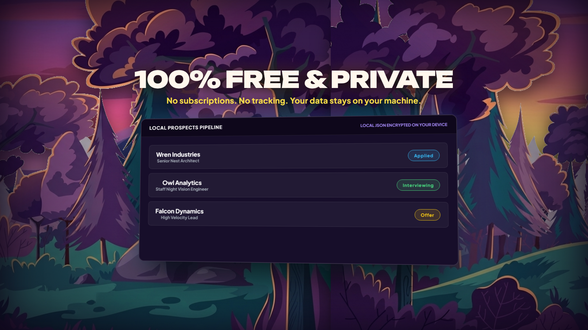

Tired of 37 open tabs, lost spreadsheets, and typing your contact details for the 400th time? Tailorbird pairs your candidate profile, work history, and tracking pipeline directly next to a dedicated browser pane.
Everything you need to apply, research, and follow up without switching windows or juggling clunky spreadsheets.
Keep your reference notes, portfolio links, and complete work history locked right beside the application form. No split screen gymnastics or lost context.


Stop typing your name, email, address, and profile links for every company you apply to. Fill common Greenhouse, Lever, and Workday fields with a single keystroke.
Capture job listings with one click as you discover them. Track status from initial prospect through interview rounds and offers without giving your data to cloud ad trackers.
tailorbird_data.json

No accounts, no telemetries, no subscriptions. Your candidate resume data and application notes never leave your personal computer.
Engineered for responsiveness with instant cold starts and minimal memory footprint. Keeps your machine humming smoothly under heavy multi-tab hunts.
Organize key decision-makers, company leaders, and custom value propositions before openings go public. Export to CSV whenever needed.
Tailorbird is open source. Clone the repository and run the application locally on your machine in seconds.
# 1. Clone the repository
git clone https://github.com/joelstransky/Tailorbird.git
cd Tailorbird
# 2. Run the desktop application locally
cargo run
# 3. Or build optimized release executable
cargo build --release